尽早离去~
OCR 识别提示（待核对）
- OCR 自动识别文字，尚未逐字校对；可能错字、漏字、漏行，数字、姓名、标点及断行也可能有误，请以截图为准。
- 这里只保留 PDF 已截到的正文、留言和作者回复；截图以外的留言不在此存档中。
- 未从截图推断留言总数或回复关系；手机界面文字也可能混入 OCR。
- 低置信标记仅为机器提示，并不表示未标记的文字已经准确。
识别工具：tesseract 5.5.0 · tesseract-ocr/tessdata_best chi_sim。识别器置信度仅用于提示核对，不是文字准确率。
第 1 页 · 原始截图
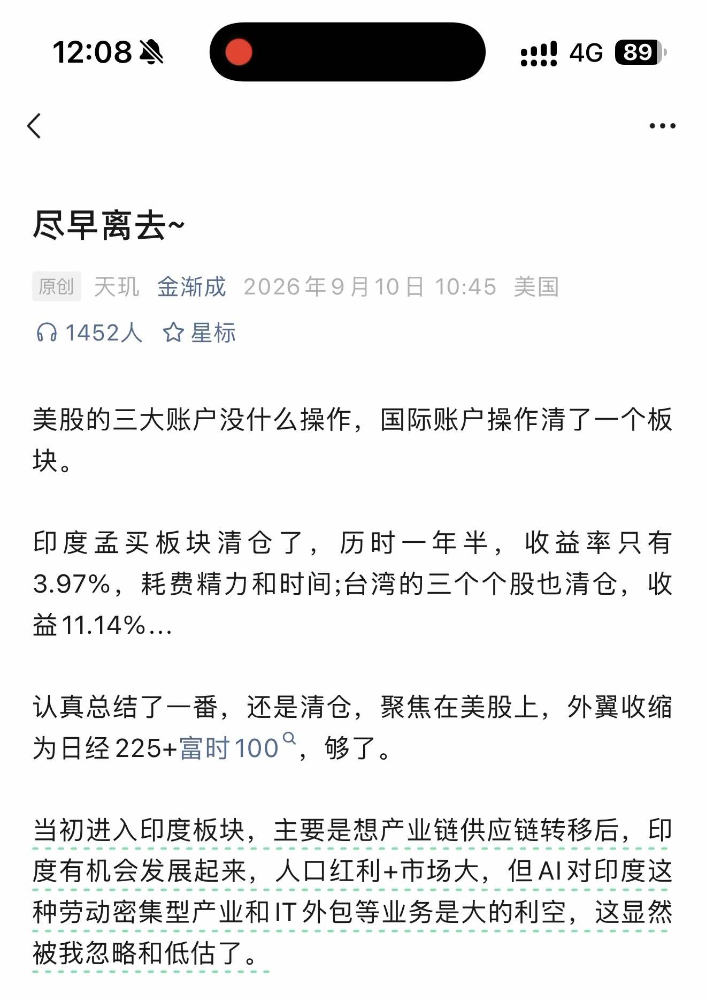
查看本页自动识别文字（OCR待核对） · 18 处低置信度提示
以下为未经逐字核对的自动识别结果，请以上方原图为准。
识别器标记 18 处低置信度，请对照截图核对
这些是识别器的风险提示，并不等于已确认的错误。
- oo 《人 :oo
- 尽早离去 ~
- 原创天现金渐成 2026 年 9 月 10 日 10:45 美国
- 们 1452 人安星标
- 美股的三大账户没什么操作， 国际账户操作清了一个板
- 3.97%， 耗费精力和时间 ; 台湾的三个个股也清仓， 收
- 益 11.149%...
- 认真总结了一番， 还是清仓， 聚焦在美股上， 外翼收缩
- 为日经 225+ 富时 100”“， 够了。
第 2 页 · 原始截图
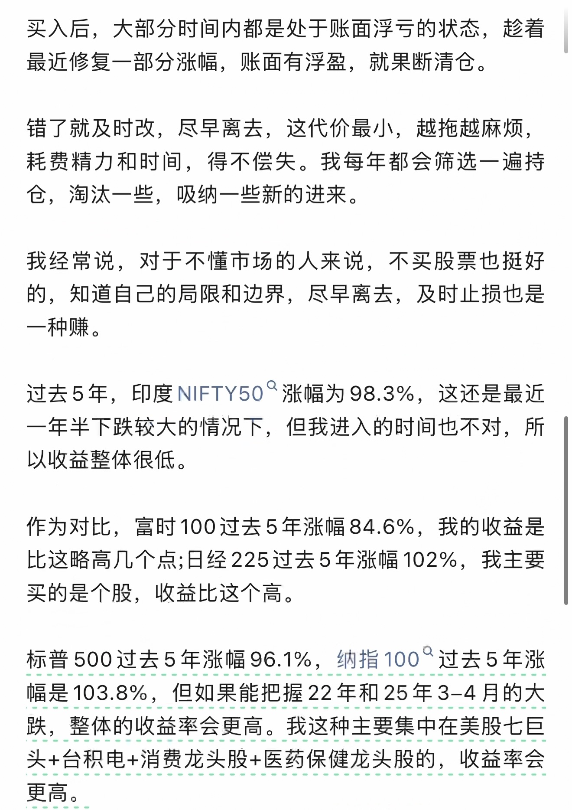
查看本页自动识别文字（OCR待核对） · 18 处低置信度提示
以下为未经逐字核对的自动识别结果，请以上方原图为准。
识别器标记 18 处低置信度，请对照截图核对
这些是识别器的风险提示，并不等于已确认的错误。
- 买入后， 大部分时间内都是处于账面浮亏的状态， 趁着 |
- 最近修复一部分涨幅， 账面有浮僵， 就果断清仓。
- 错了就及时改， 尽早离去， 这代价最小， 越拖越麻烦，
- 耗费精力和时间， 人得不偿失。 我每年都会筛选一遍持
- 仓， 淘汰一些， 吸纳一些新的进来。
- 我经常说， 对于不懂市场的人来说， 不买股票也挺好
- 的， 知道自己的局限和边界， 尽早离去， 及时止损也是
- 过去 5 年， 印度 NIFTY50” 涨幅为 98.3%， 这还是最近
- 买的是个股， 收益比这个高。
- 标普 500 过去 5 年涨幅 96.1%， 纳指 100 过去 5 年涨
- 幅是 103.8%， 但如果能把握 22 年和 25 年 3-4 月的大
- 跌， 整体的收益率会更高。 我这种主要集中在美股七巨
第 3 页 · 原始截图
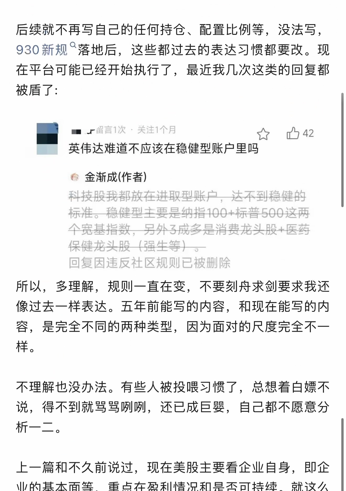
查看本页自动识别文字（OCR待核对） · 30 处低置信度提示
以下为未经逐字核对的自动识别结果，请以上方原图为准。
识别器标记 30 处低置信度，请对照截图核对
这些是识别器的风险提示，并不等于已确认的错误。
- 后续就不再写自己的任何持仓、 配置比例等， 没法写，
- 930 新规 “ 落地后， 这些都过去的表达习惯都要改。 现
- 在平台可能已经开始执行了， 最近我几次这类的回复都
- 四 .rr 十言 1 次， 关注 1 个月从办 4
- 英伟达难道不应该在稳健型账户里吗
- 吕键龙头股 ( 强生等 }
- 回复因违反社区规则已被删除
- 所以， 多理解， 规则一直在变， 不要刻舟求剑要求我还
- 不理解也没办法。 有些人被投喂习惯了， 总想着白嫖不
- 说， 得不到就加驾吓吓， 还已成巨婴， 自己都不愿意分
- 业的基本面等， 重点在鳃利情况和是否可持续。 就这么
第 4 页 · 原始截图
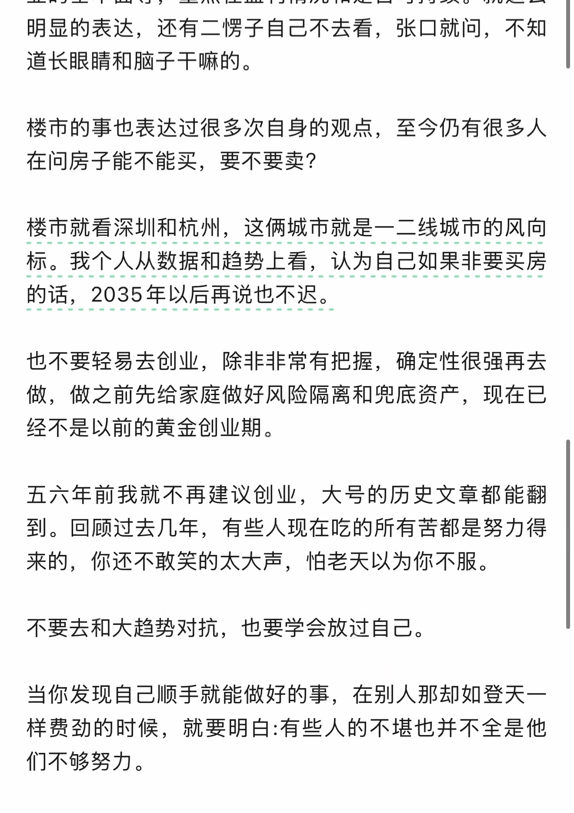
查看本页自动识别文字（OCR待核对） · 20 处低置信度提示
以下为未经逐字核对的自动识别结果，请以上方原图为准。
识别器标记 20 处低置信度，请对照截图核对
这些是识别器的风险提示，并不等于已确认的错误。
- 明显的表达， 还有二避子自己不去看， 张口就问， 不知
- 道长眼睛和脑子干嘛的。
- 楼市的事也表达过很多次自身的观点， 至今仍有很多人
- 在问房子能不能买， 要不要卖 ?
- 楼市就看深圳和杭州， 这俩城市就是一 | 到时
- 做， 做之前先给家庭做好风险隔离和兜底资产， 现在已
- 到。 回顾过去几年， 有些人现在吃的所有苦都是努力得
- 样费劲的时候， 就要了明白: 有些人的不堪也并不全是他
第 5 页 · 原始截图
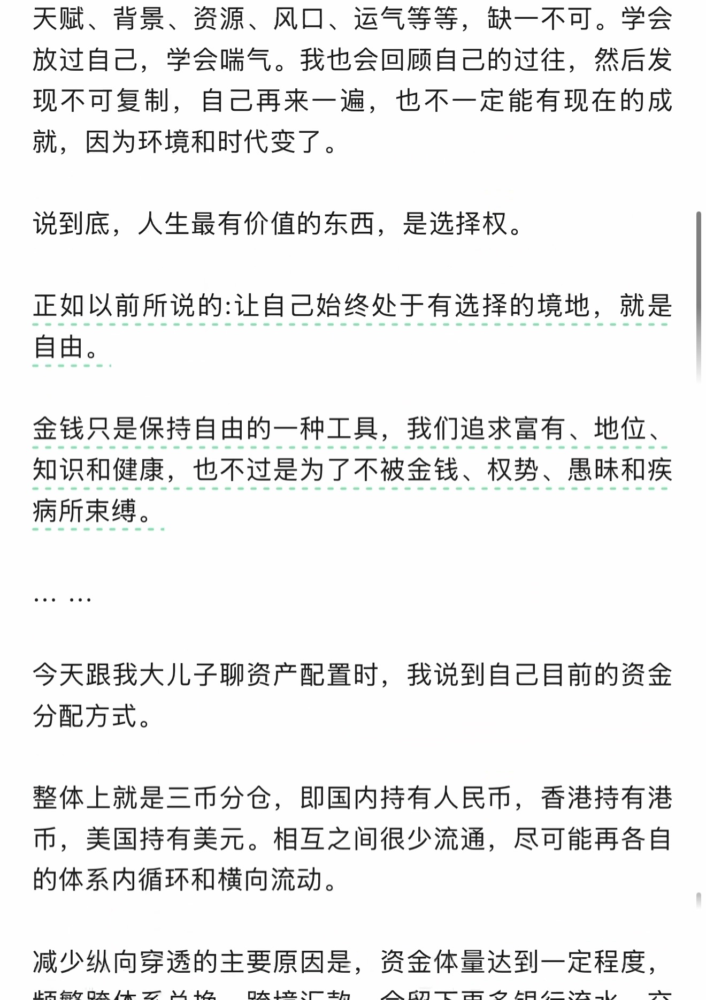
查看本页自动识别文字（OCR待核对） · 11 处低置信度提示
以下为未经逐字核对的自动识别结果，请以上方原图为准。
识别器标记 11 处低置信度，请对照截图核对
这些是识别器的风险提示，并不等于已确认的错误。
- 天赋、 背景、 资源、 风口、 运气等等， 缺一不可。 学会
- 现不可复制， 自己再来一遍， 也不一定能有现在的成
- 正如以前所说的 :让自己始终处于有选择的境地， 就是
- 知识和健康， 也不过是为了不被金钱、 权势、 思昧和疾
- 整体上就是三币分仓， 即国内持有人民币， 香港持有港
- 币， 美国持有美元。 相互之间很少流通， 尽可能再各自
第 6 页 · 原始截图
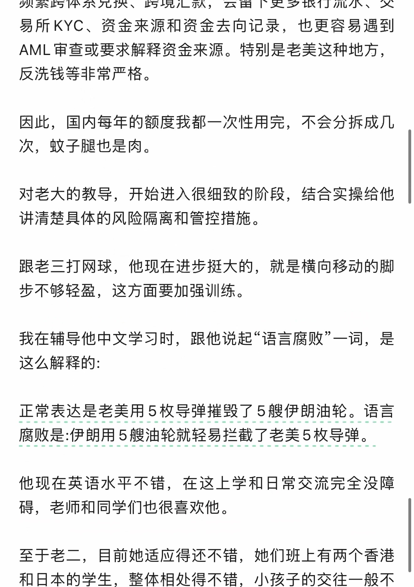
查看本页自动识别文字（OCR待核对） · 18 处低置信度提示
以下为未经逐字核对的自动识别结果，请以上方原图为准。
识别器标记 18 处低置信度，请对照截图核对
这些是识别器的风险提示，并不等于已确认的错误。
- 频繁跨体系兑换、 跨境汇款， 会留下更多银行流水、 交
- 友洗钱等非常严格。
- 跟老三打网球， 他现在进步挺大的， 就是横向移动的脚
- 步不够轻僵， 这方面要加强训练。
- 我在辅导他中文学习时， 跟他说起语言腐败 ”一词， 是
- 这么解释的 :
- 正常表达是老美用 5 枚导弹摧毁了 5 艘伊朗油轮。 语言
- 腐败是 :伊朗用 5 息油轮就轻易拦截了老美 5 枚导弹。
第 7 页 · 原始截图
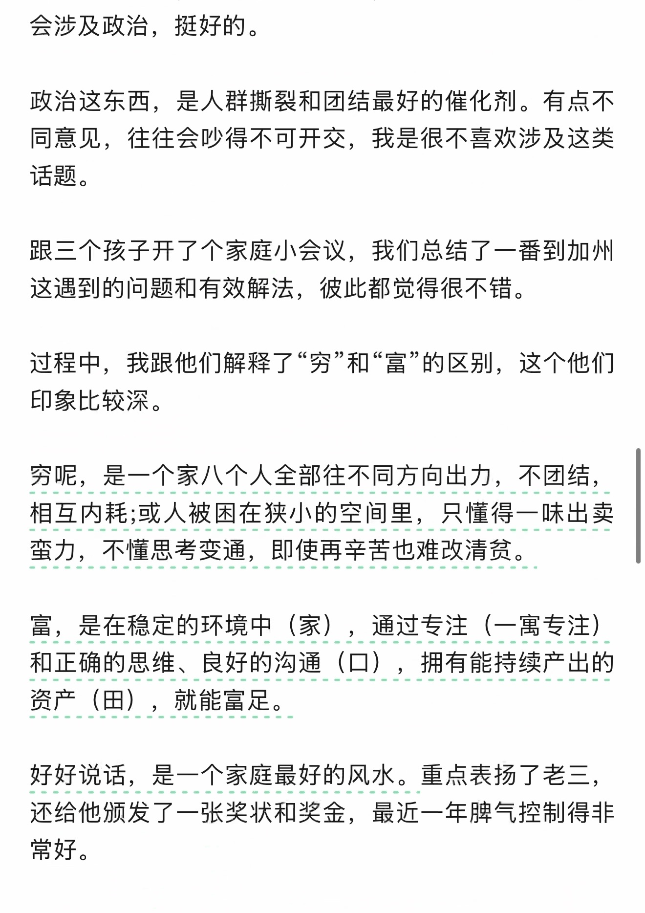
查看本页自动识别文字（OCR待核对） · 31 处低置信度提示
以下为未经逐字核对的自动识别结果，请以上方原图为准。
识别器标记 31 处低置信度，请对照截图核对
这些是识别器的风险提示，并不等于已确认的错误。
- 会涉及政治， 挺好的。
- 政治这东西， 是人群撕裂和团结最好的催化剂。 有点不
- 跟三个孩子开了个家庭小会议， 我们总结了一番到加州
- 这遇到的问题和有效解法， 彼此都觉得很不错。
- 过程中， 我跟他们解释了穷 - 和“ 富的区别， 这个他们
- 查力， 不恒思考变通， 即使再凌癌也难改清贫。
- 富， 是在稳定的环境中 《家 )， 通过专注 《一鳞专注 )
- 资产 ( 田 )， 就能富足。
- 还给他颁发了一张奖状和奖金， 最近一年脾气控制得非
第 8 页 · 原始截图
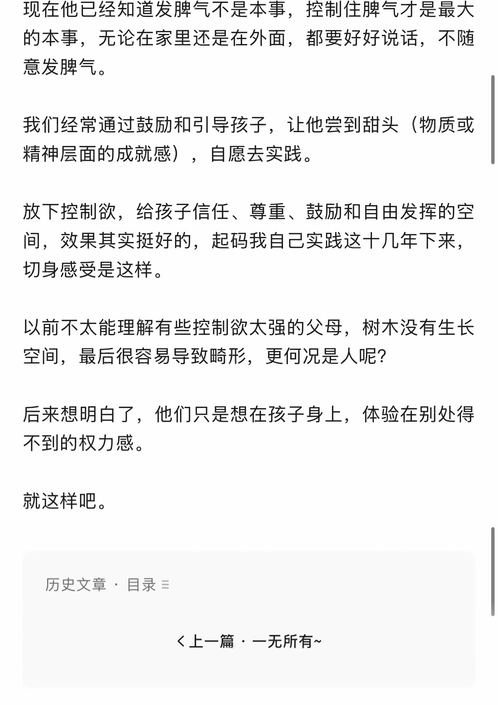
查看本页自动识别文字（OCR待核对） · 12 处低置信度提示
以下为未经逐字核对的自动识别结果，请以上方原图为准。
识别器标记 12 处低置信度，请对照截图核对
这些是识别器的风险提示，并不等于已确认的错误。
- 意发脾气。
- 我们经常通过鼓励和引导孩子， 让他尝到甜头 (物质或
- 精神层面的成就感 )， 自愿去实践。
- 放下控制欲， 给孩子信任、 尊重、 鼓励和自由发挥的空
- 间， 效果其实挺好的， 起码我自己实践这十几年下来，
- 历史文章， 目录 =
- 《上一篇一无所有 ~
第 9 页 · 原始截图
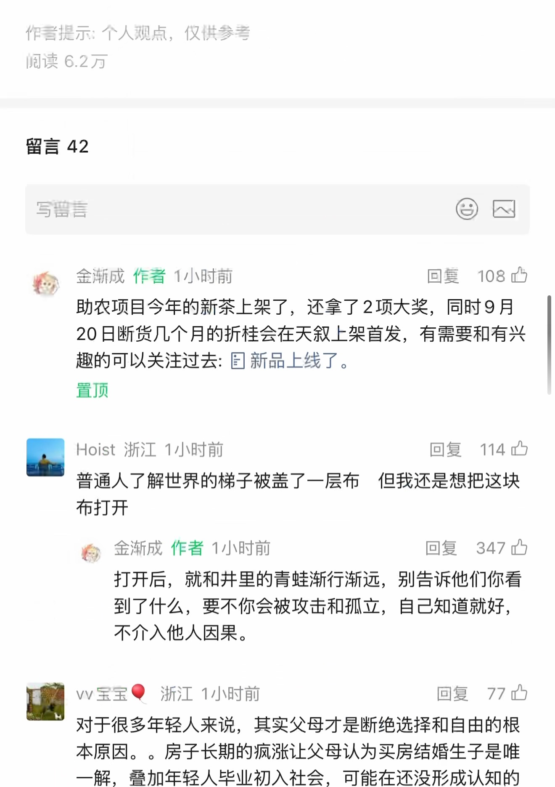
查看本页自动识别文字（OCR待核对） · 42 处低置信度提示
以下为未经逐字核对的自动识别结果，请以上方原图为准。
识别器标记 42 处低置信度，请对照截图核对
这些是识别器的风险提示，并不等于已确认的错误。
- 作才提示 : 个人观点， 仪殿参志
- 阅读 6.2 亡
- 品 O0
- 移金渐成作者 1 小时前回复 ”108 中
- 助农项目今年的新茶上架了， 还拿了 2 项大奖， 同时 9 月
- 20 日断货几个月的折桂会在天叙上架首发， 有需要和有兴
- 趣的可以关注过去 : 回新品上线了。
- Hoist 浙江 1 小时前回复 ”114 中
- 普通人了解世界的梯子被盖了一层布 ”但我还是想把这块
- 牧人金渐成作者 1 小时前回复 ”347 办
- 打开后， 就和井里的青蛙渐行渐远， 别告诉他们你看
- 到了什么， 要不你会被攻击和孤立， 自己知道就好，
- vv 呈宝但浙江 1 小时前回复 “77 四
- 对于很多年轻人来说， 其实父母才是断绝选择和自由的根
- 本原因。。 房子长期的疯涨让父母认为买房结婚生子是唯
- 一解， 芭加年轻人毕业初入社会， 可能在还没形成认知的
第 10 页 · 原始截图
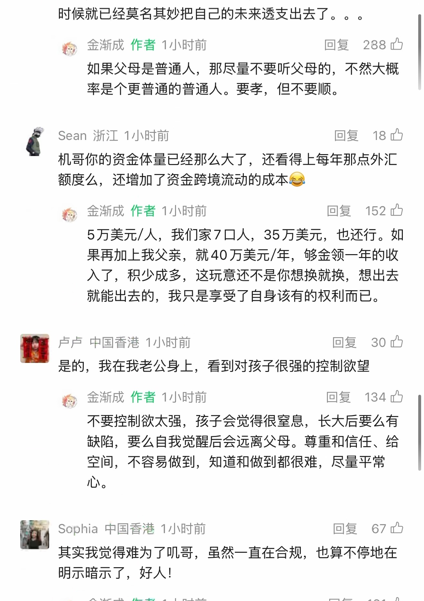
查看本页自动识别文字（OCR待核对） · 38 处低置信度提示
以下为未经逐字核对的自动识别结果，请以上方原图为准。
识别器标记 38 处低置信度，请对照截图核对
这些是识别器的风险提示，并不等于已确认的错误。
- 长， 金渐成作者 1 小时前回复 ”288 办
- 如果父母是普通人， 那尽量不要听父母的， 不然大概
- 率是个更普通的普通人。 要孝， 但不要顺。
- 人 Sean 浙江 1 小时前回复 18 话
- 机哥你的资金体量已经那么大了， 还看得上每年那点外汇
- 额度么， 还增加了资金跨境流动的成本总
- 烙， 金渐成作者 1 小时前回复 152 只
- 图卢卢中国香港 1 小时前回复 ”30 办
- 稚， 金渐成作者 1 小时前回复 134 办
- 不要控制欲太强， 孩子会觉得很室息， 长大后要么有
- 空间， 不容易做到， 知道和做到都很难， 尽量平常
- 的 Sophia 中国香港 1 小时前回复 ”67 图
- 其实我觉得难为了员哥， 虽然一直在合规， 也算不停地在
- 明示上暗示了， 好人 !
第 11 页 · 原始截图
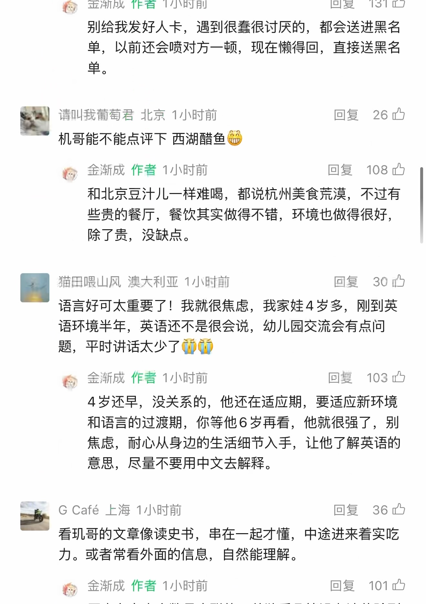
查看本页自动识别文字（OCR待核对） · 53 处低置信度提示
以下为未经逐字核对的自动识别结果，请以上方原图为准。
识别器标记 53 处低置信度，请对照截图核对
这些是识别器的风险提示，并不等于已确认的错误。
- ES
- 发金渐成作者 1 小时前回复 ”131 让
- 别给我发好人卡， 遇到很蠢很讨厌的， 都会送进黑名
- 单， 以前还会喷对方一上顿， 现在懒得回， 直接送黑名
- 请叫我葡萄君北京 1 小时前回复 26 办
- 机哥能不能点评下西湖醋鱼全
- 伶， 金渐成作者 1 小时前回复 108 办
- 和北京豆汁儿一样难喝， 都说杭州美食苇漠， 不过有
- 些贵的餐厅， 和餐饮其实做得不错， 环境也做得很好，
- 猫田喂山风澳大利亚 1 小时前回复 ”30 吃
- 语言好可太重要了 ! 我就很焦虑， 我家娃 4 岁多， 刚到英
- 语环境半年， 英语还不是很会说， 幼儿园交流会有点问
- 题， 平时讲话太少了忌策
- 合金渐成作者 1 小时前回复 103 办
- 和语言的过渡期， 你等他 6 岁再看， 他就很吕了， 别
- 焦虑， 耐心从身边的生活细节入手， 让他了解英语的
- G Cafe 上海 1 小时前回复 ”36 呈
- 看现哥的文章像读史书， 串在一起才懂， 中途进来着实吃
- 合金渐成作者 1 小时前回复 ”101 办
第 12 页 · 原始截图
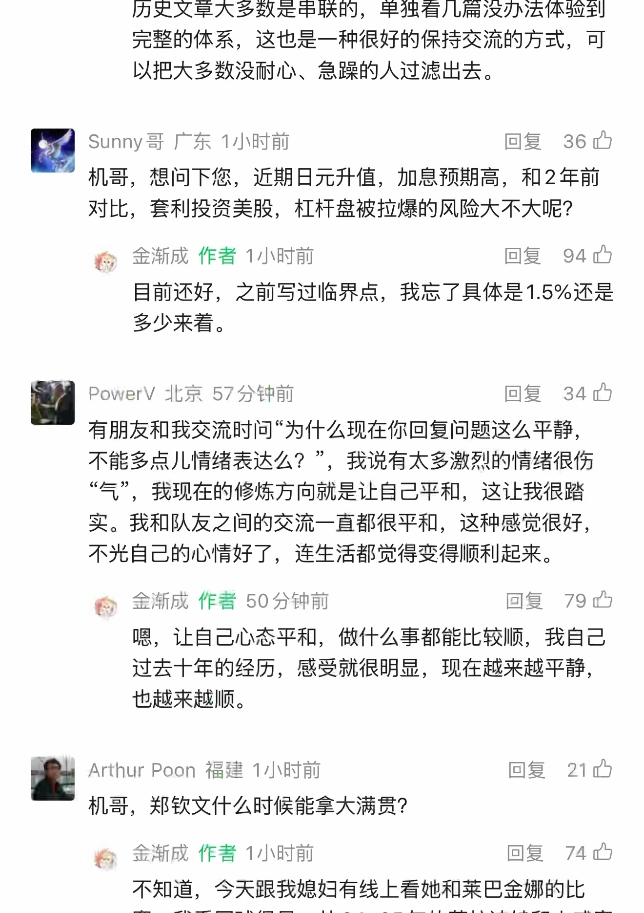
查看本页自动识别文字（OCR待核对） · 38 处低置信度提示
以下为未经逐字核对的自动识别结果，请以上方原图为准。
识别器标记 38 处低置信度，请对照截图核对
这些是识别器的风险提示，并不等于已确认的错误。
- 以把大多数没耐心、 急踩的人过滤出去。
- 国 Sunny 哥广东 1 小时前回复 36 四
- 对比， 套利投资美股， 杠杆盘被拉爆的风险大不大呢 ?
- 敬人金渐成作者 1 小时前回复 ”94 四
- 目前还好， 之前写过临界点， 我忘了具体是 1.5% 还是
- 屋 Powerv 北京 57 分钟前回复 ”34 四
- 不能多点儿情绪表达么 ?“， 我说有太多激烈的情绪很伤
- “ 气 “， 我现在的修炼方向就是让自己平和， 这让我很踏
- 实。 我和队友之间的交流一直都很平和， 这种感觉很好，
- 不光自己的心情好了， 连生活都觉得变得顺利起来。
- 伶， 金渐成作者 50 分钟前回复 79 四
- 嗯， 让自己心态平和， 做什么事都能比较顺， 我自己
- 县 Arthur Poon 福建 1 小时前回复 ”21 办
- 机哥， 郑钦文什么时候能拿大满员 ?
- 个， 金渐成作者 1 小时前回复 “74 办
- 不知道， 今天跟我媳妇有线上看她和莱巴金娜的比
第 13 页 · 原始截图
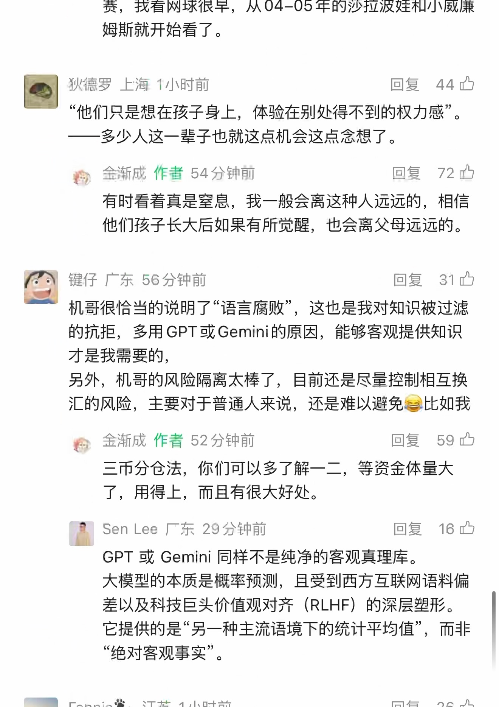
查看本页自动识别文字（OCR待核对） · 44 处低置信度提示
以下为未经逐字核对的自动识别结果，请以上方原图为准。
识别器标记 44 处低置信度，请对照截图核对
这些是识别器的风险提示，并不等于已确认的错误。
- 赛， 我看网球很早， 从 04-05 年的莎拉波娃和小威廉
- 图狄德罗上海 1 小时前回复 44 四
- “他们只是想在孩子身上， 体验在别处得不到的权力感 "。
- 准， 全渐成作者 54 分钟衣回复 72 中
- 他们孩子长大后如果有所觉醒， 也会离父母远远的。
- 键仔广东 56 分钟前回轴人已
- 机哥很恰当的说明了 “语言腐败， 这也是我对知识被过滤
- 的抗拒， 多用 GPT 或 Gemini 的原因， 人能够客观提供知识
- 汇的风险， 主要对于普通人来说， 还是难以避免筷比如我
- 从， 金渐成作者 52 分钟前回复 ”59 四
- 邑 Sen Lee 厂东 29 分钟前回复 ”16 咱
- GPT 或 Gemilni 同样不是纯净的客观真理库。
- 大模型的本质是概率预测， 且受到西方互联网语料偏
- 它提供的是 “ 另一种主流语境下的统计平均值 ”， 而非
- “绝对客观事实。
第 14 页 · 原始截图
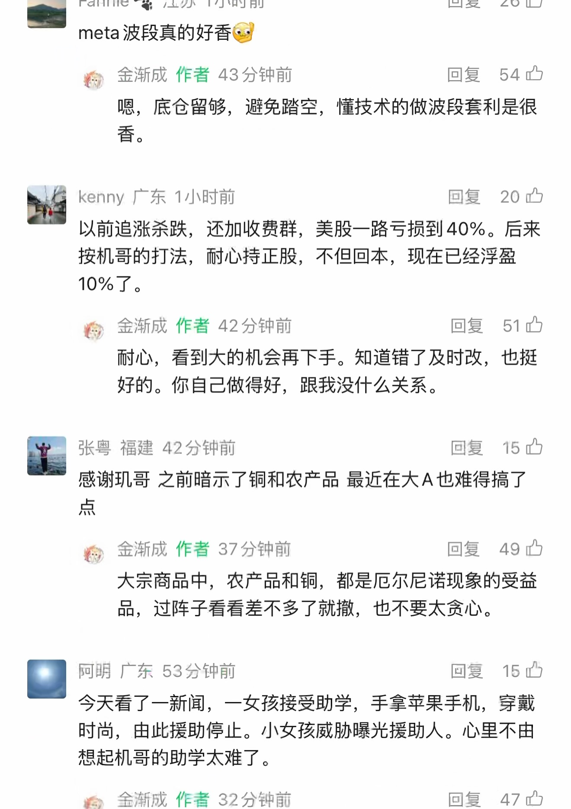
查看本页自动识别文字（OCR待核对） · 58 处低置信度提示
以下为未经逐字核对的自动识别结果，请以上方原图为准。
识别器标记 58 处低置信度，请对照截图核对
这些是识别器的风险提示，并不等于已确认的错误。
- 出 Fannieas 江苏 1 小时前回复 26 办
- meta 波段真的好香饼
- 稚， 金渐成作者 43 分钟前回复 ”54 号
- ， 底仓留够， 避免踏空， 懂技术的做波段套利是很
- 医 kenny 广东 1 小时前回复 “20 只
- 以前追涨杀跌， 还加收费群， 美股一路亏损到 40%。 后来
- 按机哥的打法， 耐心持正股， 不但回本， 现在已经浮僵
- 10% 了。
- 稚人金渐成作者 42 分钟前回复 ”51 办
- 耐心， 看到大的机会再下手。 知道错了及时改， 也插
- 张粤福建 42 分钟前回复市日
- 感谢珊哥之前暗示了铜和农产品最近在大 A 也难得摘了
- 点
- 准， 金渐成作者 37 分钟前回复已
- 大宗商品中， 农产品和铜， 都是厄尔尼诺现象的受益
- 品， 过阵子看看差不多了就撤， 也不要太贪心。
- 加阿明广东 53 分钟前回复 ”15
- 今天看了一新闻， 一女孩接受助学， 手拿苹果手机， 穿戴
- 时尚， 由此援助停止。 小女孩威胁曝光援助人。 心里不由
- 想起机哥的助学太难了。
- 容全渐成作者 32 分钟前回复 47 办
第 15 页 · 原始截图
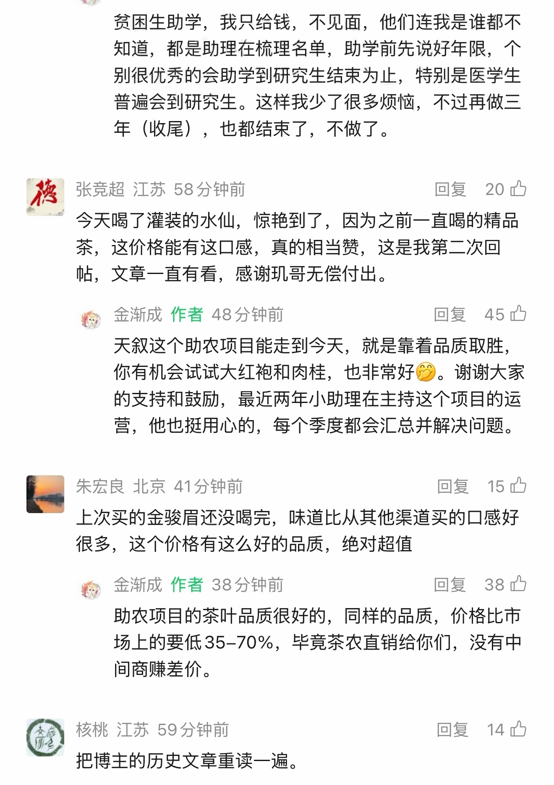
查看本页自动识别文字（OCR待核对） · 40 处低置信度提示
以下为未经逐字核对的自动识别结果，请以上方原图为准。
识别器标记 40 处低置信度，请对照截图核对
这些是识别器的风险提示，并不等于已确认的错误。
- 普遍会到研究生。 这样我少了很多烦恼， 不过再做三
- 中张竞超江苏 58 分钟前回复 ”20 办
- ”“” 今天喝了灌装的水仙， 惊艳到了， 因为之前一直喝的精品
- 茶， 这价格能有这口感， 真的相当赞， 这是我第二次回
- 帖， 文章一直有看， 感谢现哥无偿付出。
- 每金渐成作者 48 分钟前回复 ”45 号
- 天叙这个助农项目能走到今天， 就是靠着品质取胜，
- 你有机会试试大红袍和肉桂， 也非常好例。 谢谢大家
- 营， 他也挺用心的， 每个季度都会汇总并解决问题。
- 国垂 R 坏 2 回复 15 办
- 很多， 这个价格有这么好的品质， 绝对超什
- 略， 金渐成作者 38 分钟前回复 ”38 办
- 场上的要低 35-70%， 上毕竟茶农直销给你们， 没有中
- 全核桃江苏 59 分钟前回复 14 办
- 把博主的历史文章重读一遍。
第 16 页 · 原始截图
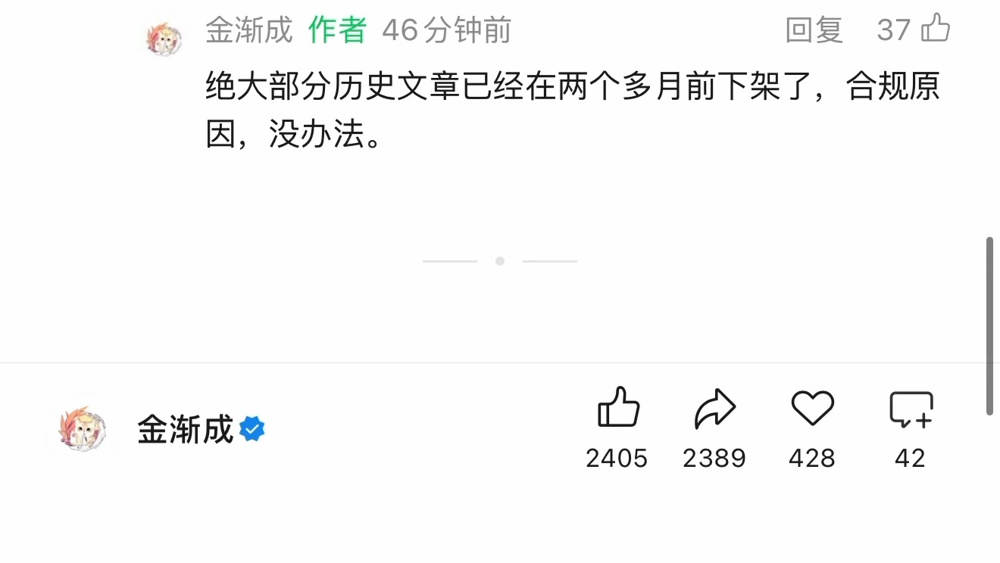
查看本页自动识别文字（OCR待核对） · 10 处低置信度提示
以下为未经逐字核对的自动识别结果，请以上方原图为准。
识别器标记 10 处低置信度，请对照截图核对
这些是识别器的风险提示，并不等于已确认的错误。
- 烙人金渐成作者 46 分钟前回复 ”37 中
- 已必 SG
- 《人金渐成名
按日期浏览全部来源（同日按条目标识排序）
回到页首 ↑